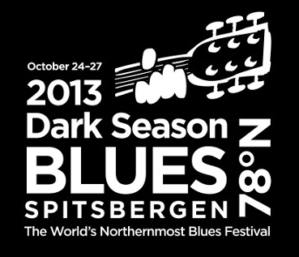
Слово Шпицберген я узнал в младшей школе, когда нам показывали на политической карте, как далеко и широко (до 78 градуса) раскинулась наша советская страна. Напомнили о его существовании блюзовые друзья-норвежцы, которые ездят туда периодически развлекать полярников. Каждый год за несколько дней до наступления многомесячной ночи они устраивают себе классный блюзовый фестиваль, который, вообще говоря, самый северный в мире. Территорию Шпицбергена используют несколько стран, включая Россию, но ни одной из стран архипелаг полностью не принадлежит, но лучше других там обжились норвеги, которые называют его Свальбардом (Svalbard).
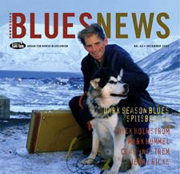
Я еще не представлял себе суровости местных условий, но уже в 2007 году после фестиваля в Нотоддене, используя связи, пристроил туда Арсена Шомахова вместе с Риком Холмстромом сыграть в начале их московско-норвежского тура с группой Билла Трояни. Арсен по своей воле не стал бы искать подобных приключений и по-возвращении был сдержан в своих рассказах, подтверждая только, что да, круто-экстремально. В результате для меня интригующая дымовая завеса тайны над Шпицбергеном начала сгущаться. Пришлось ехать разбираться самому.Первая моя попытка состоялась в конце октября 2012. Самолет на Шпицберген летал из Осло с промежуточной посадкой в Трёмсе, причем, делал это не каждый день. Я нашел способ, как мне с утра попасть на этот самолет. Для этого я вечером полетел в Таллинн, там была заказана гостиница прямо в аэропорту, чтобы поспать и на первом самолете улететь в Осло. Я очень радовался тому, как все точно рассчитал, и что смогу прилететь в Осло до нужного мне рейса на север.
Когда я утром проснулся, я увидел, что Таллинн чудесно преобразился, все было ослепительно белым от первого нетронутого снега, и я первым протаптывал следы по дороге из гостиницы. В самолете мы просидели 2 часа, но так и не взлетели, снег для сотрудников таллиннского аэропорта был фактором полной неожиданности. То ли антиобледенительный реагент на аэродром вовремя не завезли, то ли они решили сначала обстоятельно полить все самолеты, а потом выпускать по-одному. Но в результате все мои выверенные планы и эрренджменты отправились в тартарары.
Следующий самолет на север был через двое суток, в шабат они не летали. Соответственно, в любом случае, я пропускал почти весь фестиваль. Немного поразмыслив, я определился, что унывать не в наших принципах, на фестивале мне не быть, но на Шпицберген я попасть обязан. Иначе будет совсем обидно. Разумеется, пришлось выкинуть потраченную кучу денег и потратить кучу новых. Я докупил билеты, изменил бронирования, сообщил всем, чтобы сегодня не ждали. Свалился Эйрику Бергене как снег на голову и протусовался с ним 2 дня в опустевшем Осло, который покинули все остальные мои друзья, угадайте, почему? Зато я попал на чудесный концерт Борни, Эйвинда и Эйрика в маленьком Баклейс.
Самолет в Лонгйирбюен (единственный, поэтому главный, норвежский город на Свальбарде) в воскресенье был пустой. Небо было совершенно чистое, солнце светило низко как на закате, освещало белые горы розовыми градиентами. Капитан сказал, что если вы пересядете к правому борту, вас ожидают фантастические виды. Я с фотоаппаратом прижался к иллюминатору и не отлипал от него вплоть до посадки. От красоты открывшегося вида перехватывало дыхание и, да, прямо-таки наворачивалась скупая мужская слеза.
Хотя я летел один, на месте меня ждала куча старых друзей-музыкантов, которых я давно не видел. Вся группа Билли Ти, друзья из Осло, Тэд Робинсон. Но кого-то я, увы, уже не застал. День был восхитительным, а ведь у меня как раз был день рождения!
Сутки, пока я был на Свальбарде, я бегал, пытаясь захватить как можно больше прекрасного. Пока не стемнело - прогулка к фьорду с осмотром воды, луны и горных пейзажей. После в гостинице я встретил замороженных бывалых туристов, которые между делом сказали мне, что если я хочу посмотреть северное сияние, мне нужно слегка выйти из города, чтобы вокруг не было всех этих огней, и что лучшее время - как раз вечерком в полдевятого.
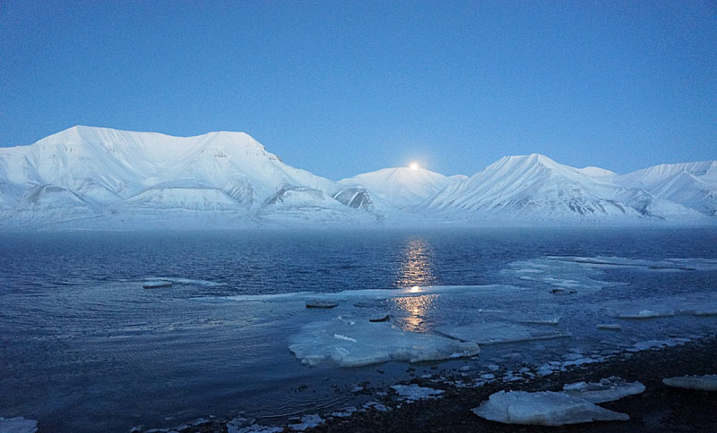
После концерта в церкви я разузнал у местного-бывалого лучшее место для просмотра. Он отправил меня направо в долину по дороге, но предупредил, чтобы я не заходил дальше чем 100-150 метров за заградительный собачий кордон. Там как раз стоит фирменный Свальбардский знак с медведем, который означает, что без ружья дальше ни-ни. Чудесная луна и звезды освещали ночные горы и снежную равнину, в крови было немного адреналина от ощущения опасности. Когда я дошел до места и стал осматриваться, я увидел, что все самое главное происходит у меня за спиной. Чудесное северное сияние над городом, которое невозможно увидеть изнутри.
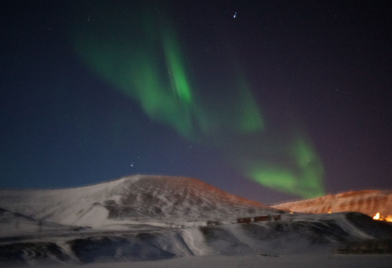
Дубак был серьезный, у меня не было штатива, но я очень старался все это снять, задерживая дыхание на 20 секунд, чтобы не трясти камеру. Несколько кадров у меня более-менее получились. Когда я вернулся в бар, я стал местным героем, ибо никто не верил, что эти картинки у меня на камере были сняты всего 30 минут назад неподалеку. Заезд с музыкантами на джипе за город после концерта уже ничего не дал, оказалось, что это только я поймал удачу за хвост, в свой прекраснейший из дней рождения!
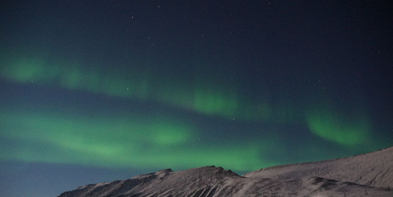
Чем меня привлек фестиваль? Ну, разумеется, экзотикой, но это, конечно, не все. Мне страшно нравилась заявленная программа, какой-то рафинировано-отобранный набор артистов, который трудно получить сразу в одном другом месте. Нотодден, при этом, несколько последних лет в среднем как-то не очень. Если выражаться определенней, то, на мой взгляд, туго со вкусом у их нового музыкального менеджера. Выезжает только благодаря обширности программы, где можно найти что-то интересное. Именно поэтому в этом году я решился ехать в Свальбард снова, мне понравились видео всех групп, о которых я раньше не слышал. После моих восторженных реплик про программу мои друзья Дима и Костя сразу же сказали, что поедут со мной!
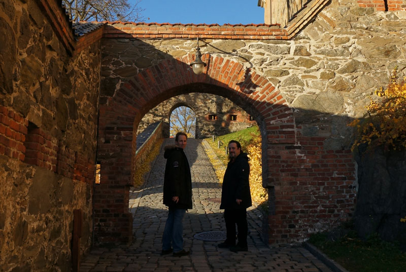
В этом году Свальбард стал более популярен, туда наладили дополнительные рейсы, в частности, беспосадочные от Norwegian из Осло. Билеты из Москвы обошлись меньше чем в 600$, это в 2 раза меньше, чем я просадил в прошлом году из-за своих приключений. Однако, прошлогодних видов в полном объеме мы не получили, хоть и заняли места у окошка по правому борту, - самолет Norwegian заходил на посадку с другой, неправильной стороны.
Первым концертом нас встретил Junior Watson в сопровождении Билла и Алекса, а также молодого норвежского саксофониста Kasper Varnes в клубе Barentz Pub. Мама, это было офигенно! Я помню ощущение шока в 2002-м в Нотоддене, когда я в первый раз попал на его концерт. Я тогда стоял напротив гитары с открытым ртом два часа, не пропуская ни одной ноты. С тех пор я был несколько раз, но в несколько более суетной обстановке и всегда на больни ших сценах, исключая, конечно, искрометный визит Ватсона в 2004 в Дом у Дороги. В этот раз было круче, чем я ожидал. Ватсон в отличной творческой форме, только что отыграл 4 концерта с этой группой. Он был свеж, остроумен и не пропускал ни одной возможности ошеломить слушателя.
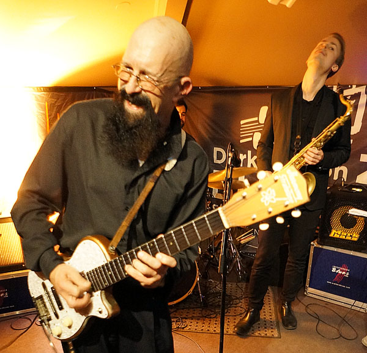
Соло Ватсона всегда ярко-издевательские, там нет ни одной избитой ноты, звучат "как поезд, сошедший с рельсов", однако, с умыслом и по программе, находящейся в его бортовом супер-мозге. Но это не все. На концерте я сформулировал для себя еще раз, почему я люблю концерты Ватсона с саксофоном? Потому, что когда саксофон играет соло, Ватсон выключает свои издевательства и приглушенно играет аккомпанемент. Если прислушаешься, то понятно, что это абсолютно идеальная партия блюзовой второй гитары, очень сложная, с кучей нетривиальщины. Короче говоря, момент, когда его нужно слушать внимательно, потому что в мире больше никто так не умеет.
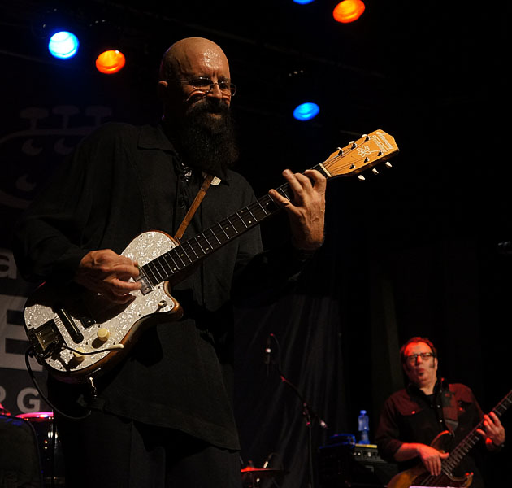
На этом можно было бы и закончить рассказ: самое сильное впечатление фестиваля и первая премия уходит к Джуниору Ватсону. Но Шпицберген - это не только блюз, но и чудная природа. А самые известные ее представители - белые медведи.
Они, вообще говоря, повсюду и могут сожрать, не успеешь моргнуть. По этой причине выходить на прогулку за город без ружья запрещено. Они не всегда голодные, иногда сами боятся, но если встретишь его, то вероятность, что он захочет тебя съесть, значительна. А если так, то шансов отбиться без оружия от 500 килограммовой скоростной машины для убийства у тебя нет. Вооруженным обычно удается отпугнуть медведя выстрелами из ружья или ракетницами. Агрессивные собаки, если их несколько, могут также напугать мишку.
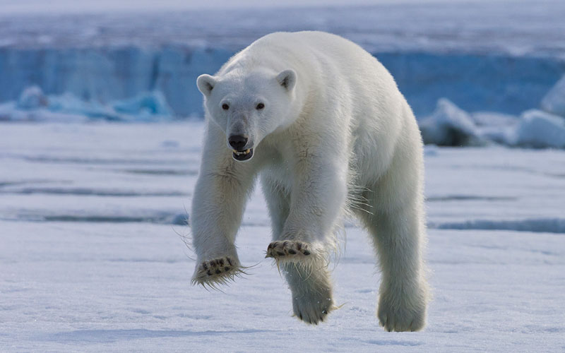
У медведей великолепный нюх, они могут учуять запах остатков еды за десятки километров. Именно поэтому в охотничьих сторожках запасы всегда хранят в плотно закрытых емкостях. А весь мусор после еды, включая салфетки, которыми вы вытирали губы, прячут в герметичные каны. Запереться в домике от медведя сложно, он войдет либо через проломленную дверь, либо через окно, либо через стену, если она тонкая.
Смелые туристы, которые ходят в многодневные походы, предпринимают специальные меры предосторожности. Один из организаторов фестиваля рассказывал, как он зимой ходил на лыжах в трехнедельное путешествие на другой конец острова. Спали они в палатках. Вокруг лагеря расставляется система безопасности: шесты по кругу, на них натянуты веревки. На шестах сигнализация и шумо-звуковые отпугивающие устройства. Если появится медведь, оно начнет на него страшно реветь и мигать. Но даже несмотря на это, в лагере все время не спит часовой с ружьем, 2 часа своей смены вглядывается в окружающую темноту. Все это помогает, но почти каждый год бывают случаи, когда кто-то чем-то пренебрег, сломалось ружье и т.п.
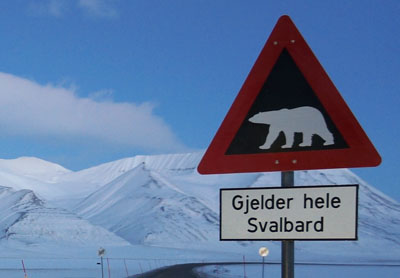
Город под защитой собачих постов и службы безопасности, но кто-то из медведей время от времени забредает, но, конечно, это совсем не так опасно, как на природе.
Лонгйир защищен горами, заливом и безопасностью, чего нельзя сказать про русский город Пирамида, который беспечно пораскинулся на значительной площади. В нем три самых крупных жилых здания: Лондон - для холостяков, Париж - для одиноких девушек и "сумасшедший дом" - для семейных. Последний назвали так из-за того, что в темное время года, 4.5 месяца, детям не разрешали выходить и играть на улице, ибо не могли обеспечить безопасность. Они все это время проводили в одном большом помещении, друг у друга и родителей на головах.
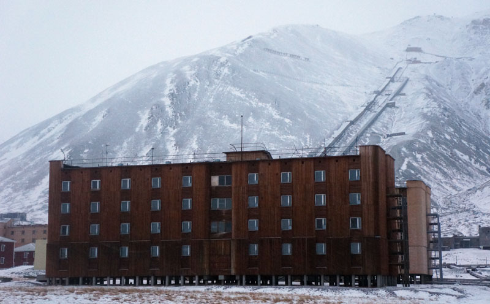
Город поражает воображение! Все инвестиции и вливания в него были сделаны в советское время, а сейчас это - законсервированный совок. В частности, там находится самый северный (79N) бюст Ильича. Самое крутое в том, что в городе давно никто не живет, кроме двух человек, которые зимуют там, чтобы присматривать за техникой. Говорят, примерно такую же заброшенную картинку "остановись мгновение" можно увидеть в городе Припять рядом с Чернобылем.
В Пирамиде нам оставили огромную столовую с советскими кухнями, дом культуры с огромным темным залом и роялем на сцене, а также гигантский бассейн с душевыми. Классный консервированный памятник эпохи.
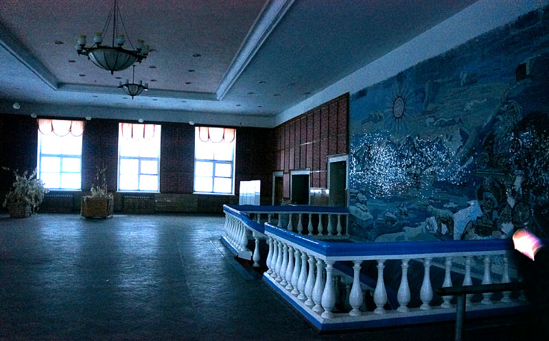
На Пирамиду раз в несколько дней ходит лодка MS Lang?ysund с туристами из Лонгйира, мы шли на последней в этом сезоне перед наступлением темноты. Замечательная 10 часовая морская прогулка среди гор Шпицбергена, с экскурсией в Пирамиду и поеданием барбекю из китового мяса на фоне чудесного ледника.
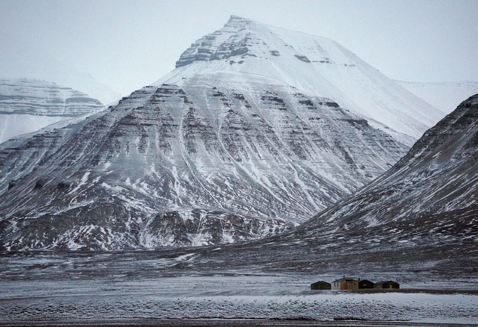
Подробности про Пирамиду накануне нам рассказал Вова из МГУ, который водил нас в поход в гору рядом с Лонгйиром в небольшую ледяную пещеру. Он перезимовал на Пирамиде и весной отправился в норвежскую часть работать тургидом. Вот его свежая статья с фотками.
Советская действительность распространяется и на 78-й градус. Вова поведал нам милые подробности про жуликов и воров, а также раздолбаев, которые там уже даже не огорчают, а веселят туристическим колоритом. Вот, к примеру, московское начальство сообщило местным работягам в Баренцбурге (второй и последний в списке действующий город на Шпицбергене) про то, что те имеют удовольствие уже несколько месяцев раскатывать на свежезакупленных им новых снегоходах. Разумеется, это известие вызывало исключительное недоумение, понимаете, почему. Никто же из зануд не поедет на 78-й градус проверять детали исполнения госзаказа, не так ли?
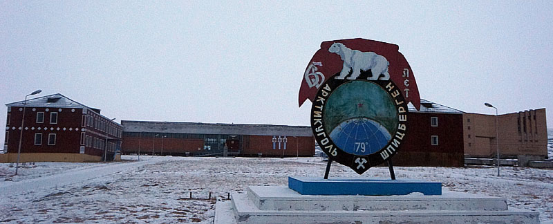
Или еще историйка про, наоборот, раздолбаев: снабжение Пирамиды из Баренцбурга дизельным топливом и продовольствием осуществляется чудесной речной баржей, которую гоняют через так называемый на глобусе "Северный Ледовитый Океан", ей управляет полтора матроса. Прошлый раз она по дороге села на мель, а поскольку там нет нормальной связи, ее потеряли на 4 дня. По прошествии созвонились отправитель и получатель и задали друг другу вопросы: "ну и где? не видали?". И еще: "что у вас там на Пирамиде из продуктов осталось? Только рис? И кетчуп? Аааааа, ну ладно, все тогда нормально, жрите рис с кетчупом...". Баржу потом нашли и сдернули, дело пустяковое, а капитан и матрос, видимо, не бедствовали, у них с собой был запас дизеля и жратвы на целый город на полгода, что еще нужно?
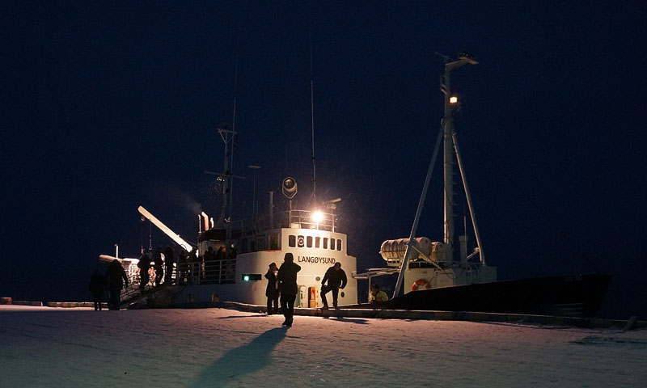
Мы уезжали из Пирамиды в темноте, это был последний пароход в этом году. Встретили двух русских зимовщиков на джипе, они выглядели бодро и были совершенно трезвыми, наверное, тут нужны особые принципы и склад характера, иначе захандришь. Делать им все приходится своими руками, в частности, чинить многодесятитонный дизель или, скажем, местную микроТЭЦ.
Через неделю светлая часть дня, которая выглядит как сумерки, начнет убывать больше, чем по часу в день. А еще через неделю резко потемнеет, до февраля будет черная тьма, останется только луна и звезды.
Именно в такое время в Лонгйире устраивают блюзовый фестиваль Dark Season Blues Fest, чтобы оторваться и помедленней впадать в депрессию. Но, нужно сказать, что зима и ночь на норвежском Шпицбергене не хуже, чем в Москве!
Совсем нет этой слякоти, приятный морозец, ну, -15..-20, ничего особенного. В помещениях тепло и светло, при входе в любой дом, включая общественные заведения, сразу снимают ботинки, ставят на стеллаж и ходят в носках по теплому полу.
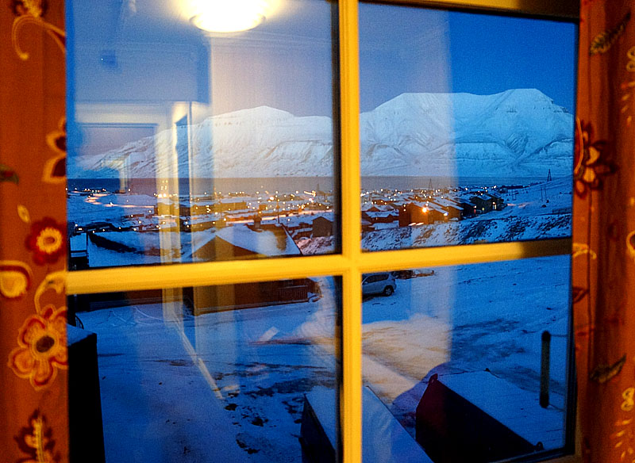
По дну океана с континента протянут супер-толстый оптоволоконный кабель. Фейсбук летает, я думаю, без этого, мало бы кто согласился.
Есть много баров, в одном из них - Karlsberger Bar - там, кажется, самый большой в мире выбор крепких напитков типа виски, бренди и коньяков - 1020 бутылок, как сообщает нам Фейсбук. Норвеги не берут налоги и акцизы на Свальбарде, это значит, что бузз там существенно дешевле, чем на норвежском континенте. Поэтому некоторые предприимчивые норвежцы прилетают туда на викенд квасить.
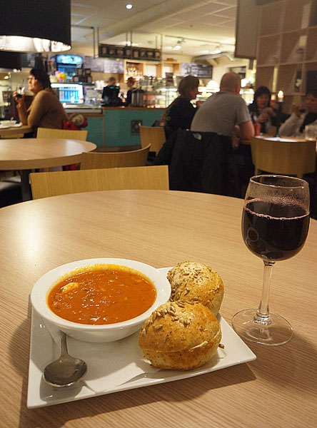
Все там очень даже цивилизованно, а ночь не так страшна. В Москве я встаю поздно и зимой все равно света белого не вижу. Но в Лонгйире в музыкальных клубах есть 2 (два, прописью) Хаммонда, а в Москве пока только один ;)
Вообще, у всех посетивших этот чудный уголок, на третий день, когда первые впечатления схлынули, наступает период переосмысления и появляются мысли: Эх, вот бросить все в Москве, уехать сюда на год пожить-поработать-подумать о вечном.
Многие так поступают. Собственно, местных там не очень много, большинство приехали поработать. Причем, сначала на срок в несколько месяцев, потом зависают, никак уехать не могут, затягивает.
Но вернемся к нашим, э, незаслуженно забытым, как их, ба-бу-бу-му-зыкантам!
Колоритная группа из Флориды, образованная тремя маститыми чуваками два года назад в результате встречи на постфестивальном джеме. Как сообщает пресс-релиз, им там очень друг с другом понравилось, поэтому они изменили своим маститым группам и связали свою последовавшую творческую жизнь друг с другом. Чуваки, как я упомянул, настолько маститые, что хоть группа и молодая, о ней уже говорят в разных местах: "оу, Southern Hospitality, да..." и приглашают на различные фестивали.
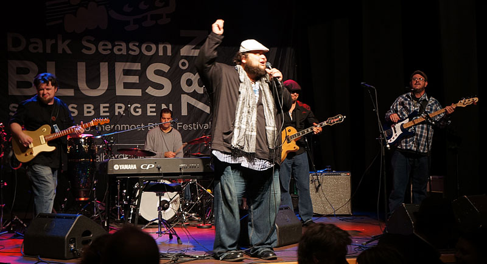
Группа - ничего, играет всё южное - блюз, рок и соул. Ну, есть какие-то провинциальные хиты местами, если слушать концерт целиком, мне скучновато, но в целом "добротно" и иногда даже "оригинально", хороший звук!
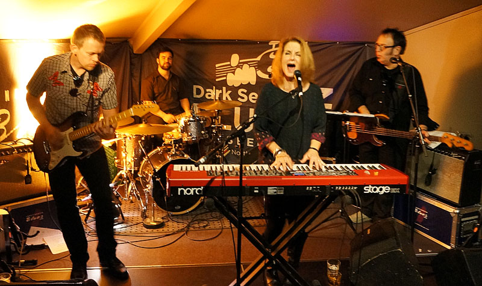
Играла на фестивале в сопровождении Billy T Band. Очень заводная дама, которая лихо поет соул и играет буги на пианино. Как следует из изучения её сайта, дома ее остался ждать целый бэнд Rhythm Tramps из 6 слабаков, пока Тереза отдувалась за них на крайнем севере. Что можно сказать, Тереза - молодец, но в режиме джема даже с отличными музыкантами не так интересно, как с родным оркестром. Я сам в этом убеждаюсь регулярно, имейте в виду, когда выбираете, что пойти послушать.
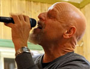
Я нашего друга встретил на фестивале год назад в 2012, еще раз убедился, что он на сегодня - один из самых сильных соул-блюзовых вокалистов. С ним всегда круто встретиться на фестивале или концерте, получишь удовольствие. Читайте афиши внимательно, не пропустите имя "Tad Robinson" в вашем городе! На Шпицбергене я его застал только в последний день, он в компании с Биллом пел в церкви госпелы и отобрал благочестивый соул нескабрезного, хотя и совершенно гражданского содержания. Главное ведь это эмоция, а не текст? Удивительно, но ему на этом концерте и на последующем ночном джеме помогал блюз-рокер Dave Fields.Я в последние годы не так уж много слушаю тяжелого гитарного блюза, только отдельных нетипичных талантов. Но могу сказать точно, что если вы решили устроить энтертейнмент и разнообразие на вашем фестивале и пригласить звезду блюз-рока, зовите Дейва Филдса, не ошибетесь! Через мощный усилок он зарубает очень агрессивно, но это не значит, что играет много и громко. Мозг у него работает как машина, ритмически все супер-четко. Очень интересно было смотреть, как они по микросекундам синхронизируются на джеме с Тэдом Робинсоном, реакция и собранность лучше, чем у хоккеистов.
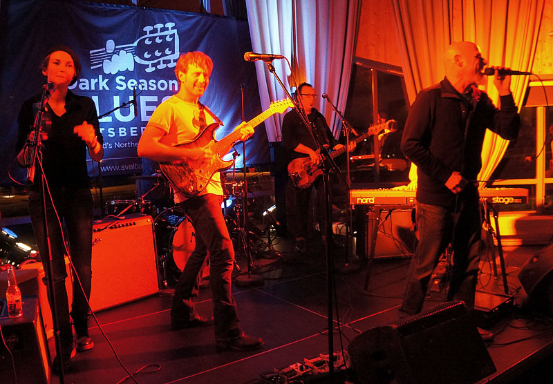
Я записал в большой плюс устроителям фестиваля то, что они смогли выбрать и пригласить не случайного или знаменитого блюз-рокера, а того, кто сегодня очень хорошо играет в своем жанре. Задача не из легких... Т.е. вкус, он не должен отдыхать никогда, особенно, когда ввязываешься в такое рискованное мероприятие!
Певица Стина, у которой разбитая душа под замену, собрала большую хорошую группу для фанка и соула. Там и девушки с бэквокалом, и дудки, и Хаммонд! Некоторые номера и аранжировки мне откровенно понравились. Что-то вызвало недоумение, типа, семиминутной Олдлав Клэптона, исполненной втроем. Что это было? Сама Стина - хороший бэндлидер, меня лично не очень, правда, впечатлил ее голос, но поет она и делает все круто. В целом - неплохая и наполовину нескучная группа, послушайте при возможности!
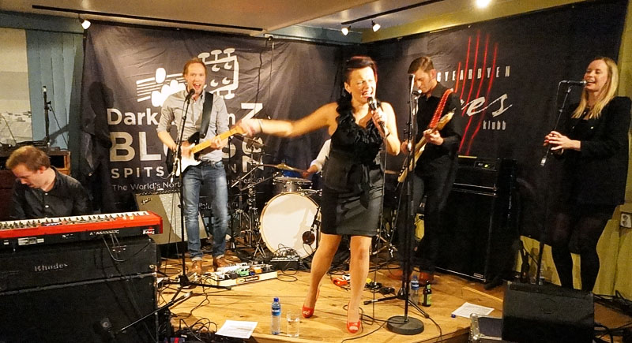
(Эх, легко быть критиком из укрытия, писать издалека и на чужом языке, не стесняясь формулировать весь спектр впечатлений.)
Есть палочка-выручалочка у этих критиков: когда не получил супер-впечатлений от музыканта, которого по-прежнему считаешь очень хорошим, пиши меньше о концерте, больше о биографии и его авторитетности.
За шведским соул-блюзменом Свеном Зеттербергом я слежу очень давно, у меня есть несколько пластинок, одна "Let me get over it" - из числа любимых. Он супер-вокалист и супер-гитарист с крутыми блюзовыми яйцами, на него равняются с детства все мои скандинавские блюзовые друзья. Больше всего самого Свена цепляет всю его творческую жизнь Bobby "Blue" Bland, как и меня в значительной степени.
В группе у Свена уже давно вторым гитаристом служит Anders Lewen, который когда-то составлял основную соль вест-кост-блюзовой группы Knock-Out Greg & Blue Weather. Этой осенью как раз исполнилось 10 лет их легендарному визиту в Москву на стадионный блюзовый фестиваль на Динамо, который организовывался при активном участии blues.ru. Андерс - уникальный гитарист, заслужил это звание супер-эстетским исполнением вест-коуст-свинга и ритм-н-блюза 50-х. Вместе со Свеном он успешно переключися на более мягкую соул-гитару, у них гармоничный творческий тандем.
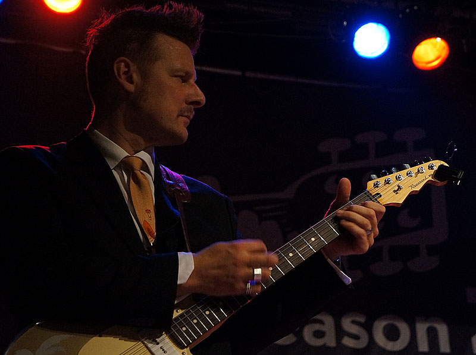
Свен вышел в первую нашу ночь на джем после Джуниора Ватсона, петь Бобби Бленда. Все, о чем я написал выше, там было в полном объеме. Офигенно-отлично-супер, что еще можно сказать!
К сожалению, основной концерт группы мы пропустили. Попали только на их совместное выступление с маститым норвежским гитаристом Кнутом Рейерсрудом.
В целом, я уже сталкивался с этим дуэтом - Свен + Кнут лет 5 назад, песни были те же. По сути, это был джем, готовых аранжировок и крутых песен не было, стандартные стандарты блюза и необычные заезженные стандарты из программы Кнута. Кнут тоже очень заслужен, за дело, в принципе. Я первый раз его увидел в Нотоддене в 1999-м году, он играл с Бадди Гаем, своим, как бы учителем, очень вдохновился и убрал тогда, по моему единодушному мнению, своей прекрасной блюзовой гитарой всех присутствовавших, включая мастера.
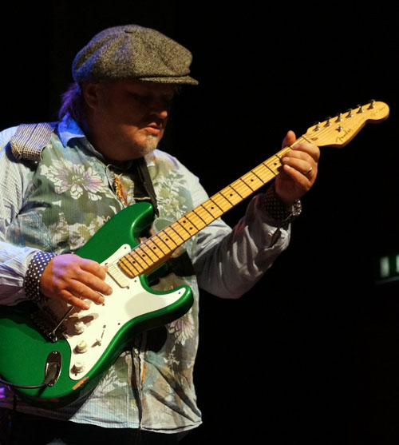
С тех пор я проникся уважением и следил за его творческой карьерой. Но что-то ни разу не удалось от него дождаться чего-то без оговорок стоящего: не свидетельствующего о его таланте, а стОящего само по себе, т.е. крутой музыки. В этом году я на него даже чуток рассердился, это мне позволило по прошествии 15 лет снять Кнута с личного листа ожидания. Слишком он был ленив, индифферентен и погружен в себя.
В клубе он выступал с народным скрипачем в составе дуо со странной музыкой, что само по себе рискованно. Вокруг было 150 разгоряченных алкоголем человек, которые жаждали шоу, но он по 3 минуты между песнями вяло крутил колки, что-то говорил, и был где-то далеко. Наверное, так может делать человек, если он не очень любит музыку, которую играет, по-крайней мере без страсти и горячности. Который погружен в себя, свое творчество и самовыражение, и одновременно игнорирует публику. Так нельзя.
Увы, джем с Кнутом испортил впечатление от появления Зеттерберга на фестивале. Кнут не один виноват, я думаю, если Свен не заведется, может получиться не очень. Но, если повезет, то уж повезет.
Спустившись вниз на параллельный концерт я застал группу 20-летних гораздо более зеленых чуваков. Понятно, что претензий было много: сыроватый звук и вокал, творческие искания в области необычных гармоний и избыточных аранжировок. Но одно было очевидно, их перло от того, что они играли. И все у них со временем исправится и будет хорошо.
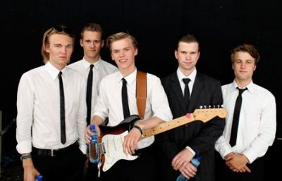
Главное, контраст со вторым этажем был значителен.
И вот опять я использую целые творческие судьбы, не чтобы о них рассказать подробнее, а в качестве иллюстрации к философско-морализаторским рассуждениям о музыке.
Многие музыканты незадолго до творческой кончины ставят перед собой вопрос ребром "бог я или говно?". Оба ответа не являются удовлетворительными: либо ты воспаряешь от раздутого эго, перестаешь расти и учиться, либо ты падаешь в пропасть от развитого комплекса неполноценности, а самокритика забирает у тебя последнюю энергию, чтобы хоть что-то делать. Причем, эти состояния являются пограничными и у многих легко перетекают друг в друга.
Эгоцентричность у музыканта часто выражается в постепенном удлиннении с возрастом соло в песнях. Он все пытается повторить старые успехи, а поскольку часто избитые вещи больше не работают, начинает искать себя и делать что-нибудь странное. Типа, давай я попробую что-то поменять, вдруг случайно получится снова круто? Отсюда всплывает медитативная музыка, бесконечные повторения скромного кол-ва музыкальных идей, а также какие-то новые альбомы и программы, вызывающие недоумение у поклонников. Вроде бы он ищет себя..., но на самом деле, это кризис.
Про музыкантов, которые записали себя в говно, рассказывать, увы, не о чем. Мы их не слышим в достаточном количестве, они умирают где-то по углам, не на наших глазах, или обижаются, куда-то уходят и не возвращаются.
Подскажу музыкантам в метаниях правильный ответ: важно, не кто и какой ты, а важно, что ты делаешь. Для музыканта: какой музыкальный продукт ты создаешь. Идеальная формула, чтобы это реализовать, к которой я пришел, такова. Главный музыкальный продукт - это исполненная песня. Забудь о самооценке, сконцентрируйся на музыке. Выбери самые клевые песни, которые тебя цепляли, пойми, что именно в них цепляет. Начни играть песню для людей, стараясь концентрироваться на красоте, в ней заложенной. Твоя задача - донести эту красоту до слушателей, чтобы им песня тоже очень понравилась, как тебе или даже еще больше.
Тут нет времени думать о себе. Только когда ты выполнил эту задачу, а сам полностью растворился в ритме, груве и гармонии, можешь начинать постепенно играть всякие импровизации, добавлять свою индивидуальность. Но без отрыва от исходного материала, вспоминая о песенной форме, которая ограничивает исполнение одной вещи четырьмя минутами.
Вот если получится хорошо сделать много разных клевых песен, то кризиса как не бывало, раскроешь свою индивидуальность, а сами песни будут отличным подпитывающим ее контекстом. Должно получиться очень круто. И даже старые темы, которые тебя перестали волновать уже давно, зазвучат ново и свежо. Во многих вещах есть несколько слоев сложности и красоты, если раньше снял верхний, то сейчас копай глубже и слушай тоньше.
В этом секрет успеха в нашем деле! Но если я вижу, что человек все делает наоборот: соло на 10 минут; скучающий или отсутствующий вид или же перманентные надрыв и экспрессия на сцене; странные творческие искания; шара, джем и халтура в отношении к материалу; попытка представить себя, а не песню, которая только фон для солиста, я это сразу узнаю и пишу - пропало.
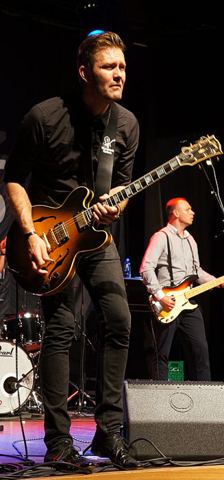
Mike AndersenДвухметровый гитарист Майк Андерсен из Дании - еще один авторитет для меня, я очень люблю, например, его пластинку "My Love For The Blues". Он играет блюз и соул-блюз в большой группе с кучей аранжировок с дудками и Хаммондом. Майк делает супер-шоу, эмоциональность бьет через край, аранжировки оооооочень богаты. Я бы сказал, чересчур.
Его концерт очень интересно послушать, ищите такую возможность! Но часто остается двойственное ощущение, не все из того, что он делает, цепляет в результате. Слишком много театра и экспрессии, усложненные гармонии, слишком много стоп-таймов и избыточных переаранжировок, в целом - вычурно. Даже его крутейшая гитара - он слишком ее контролирует, когда играет бенды, отрывается от грува.
Есть-есть легкие признаки описанного в предыдущей главе, я думаю, Майку нужно прикрутить ручку индивидуальности, не показывать все, что знаешь, за раз, больше лечь в грув и вылезать оттуда пореже, но поубедительней. Очень наглядно было, когда на джеме вышел спеть/сыграть песню второй гитарист Андерсена - Йоханнес. Там спереди были ритм, блюз и яйца, а сзади - отличная группа Майка Андерсена. Но важно же, не какая у Майка вообще группа, и хорош ли он, а что он обычно делает на концертах, не так ли?
Скрещиваю пальцы и очень надеюсь, что в будущем у Майка все получится!
Когда мы с Димой и Костей разглядывали друг у друга плейлисты mp3-плееров, обнаружили у всех подозрительно повышенную концентрацию соул-блюза. Раньше за такое одноклассники сразу бы засмеяли. То же самое замечено у многоопытных заезжих музыкантов, уставших за много лет от слишком легкодоступных жестких выразительных средств. А если вглядеться в программу фестиваля на Свальбарде, то почти каждая группа, если не в открытую, то латентно тяготеет.
К чему бы это? Всемирный заговор или же модный тренд? Не знаю... Только не подумайте, что я тут занимаюсь пропагандой нетрадиционной блюзовой ориентации среди несовершеннолетних блюз-рокеров, так, просто мысли вслух. А вы, кстати, уже скачали себе сборники Stax и Motown Records?
Отдельным отделением на концертах группы Билла Трояни иногда выступает солистом наш друг - прекрасный гитарист Хокон Хэйе. Во всем, что они делают, всегда есть вкус и супер-инструментализм. Хокона я знаю давно, с 2002 года, когда он приехал впервые в Москву. Уже тогда давно он поражал мое воображение, играя на кухне в точности гитарные номера Рика Холмстрома, Джуниора Ватсона и Билла Дженингса, которые я считал супер-элитарно-секретными жемчужинами.
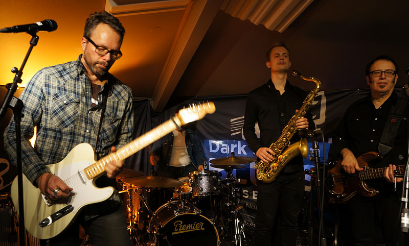
Хокон делает все правильно с точки зрения расписанной мной повыше теории. Он не супер-ярок как солист, но очень стилен, Хокона очень приятно слушать, он играет свои любимые песни и делает их отлично. В феврале 2014 у нас будет прекрасная возможность заценить это еще раз в Доме у Дороги в Москве во время гастролей Билли Ти Бэнда.
На этой мажорной ноте покончим с фестивальной музыкой, вернемся на природу!
В первый приезд в условиях дефицита времени я-таки смог поучаствовать в прекрасном развлечении души - катании на хасках с последовавшей с ними дружбой. Тебя вывозят за город на джипе, с ружьем, на удаление, там находится собачий пост для ездовых собак, работающих в туриндустрии.
Хаски живут в вольерах, обычно приподнятых над землей, чтобы не заметало. На Свальбарде они проводят на улице круглый год, в дома собак не пускают. Даже личных жучек держат не дома, а на частном собачьем посту на въезде в город, где их навещают хозяева и водят на прогулки, т.е. по делу. Иначе будет шумно, ибо хаски - очень страстные животные. Конечно, живут на дворе они в коллективе, но им все равно скучновато. Когда со двора уходит упряжка, собаки, которых взяли, в ажитации, они обожают работать, а оставшиеся буквально воют вслед от черной зависти.
Собачек поначалу жалко, но потом понимаешь, что им вполне комфортно. Когда погода не очень, они могут сворачиваться калачиком, их заметает снегом, только нос торчит, и им там, говорят, тепло. Если крепкие морозы, их просто кормят два раза в сутки, они греются изнутри. Хаски совершенно меховые и страшно приятные на ощупь. Последние 20 минут аттракциона я провел тиская собак: не отвлекаясь и без каких-либо ограничений.
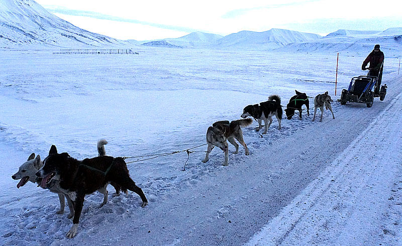
Катание осенью бывает на тележке, а не на санях, снега еще мало. На аттракционе я был один, и все три часа меня развлекал гид, заметьте, австралиец, он научил меня всем процедурам, включая управление упряжкой. Собаки бегут где-то минут 7-10, потом начинают притормаживать, ты их отправляешь на обочину отдохнуть и подзаправиться: они жрут снег, а изо рта, как из печки, валит густой пар. Поскольку они живут в минусе почти круглый год, пить жидкую воду им вообще почти не приходится.
Заканчивается катание всеобщим кормлением всего двора, это важнейшая часть аттракциона. В теплой сторожке заготовлен огромный бак разведенного собачьего корма. Когда раздается скрипт двери, абсолютно все собаки встают в стойку, вытягивают морды в одну сторону, замирают и замолкают. Гробовая тишина длится минуту, пока не выкатывается бочка с едой. Миски заполняются по-очереди, и очень приятно собственноручно вручать им еду, после чего собирать пустые миски и тут же их можно хорошенько потрепать за все пушистые места.
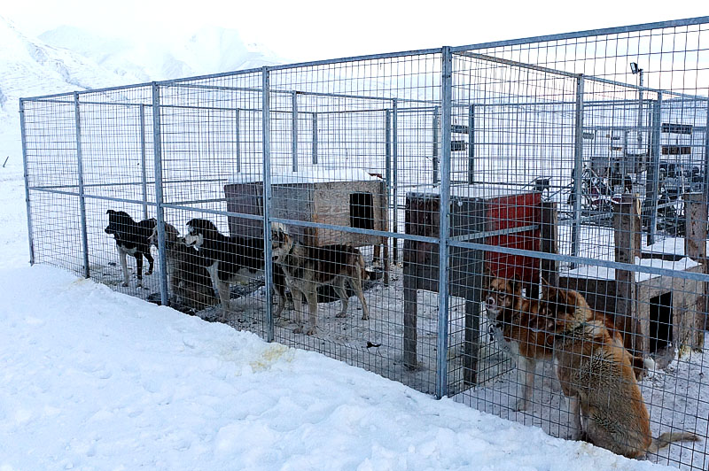
Милые, милые собачки!!
Путь домой в этом году был не менее интересным. После поездки в прекрасное место очень здорово, когда остается что-то клевое вещественное, напоминающее о прекрасно проведенном времени. Какой-нибудь самозаписанный из кармана бутлег, суперский компакт-диск или клевая куртка, которую здесь не купить, и в которой можно ходить долго. Но в этот раз было посущественней! ;)
Параллельно поездке на фестиваль я проворачивал сложнейшую трехнедельную операцию: с помощью моих друзей покупал в Австрии настоящий электроорган Хаммонд. Подготовительный этап длился полтора года в виде наших мечтаний с Димой о том, как прекрасно было бы когда-нибудь купить и привезти Хаммонд в Москву. Счастливое открытие Дома у Дороги на новом месте (запоминайте: м.Проспект Мира, Щепкина, 33) подстегнуло процесс, и я решился все сделать в ближайшее время.
Обычно Хаммонды импортируют из США, их заколачивают в ящик, они плывут три месяца на корабле, потом их долго чинят и тогда, может, все кончается хорошо. Я пошел другим путем, попросил нашего друга Raphael Wressnig, лучшего органиста из лучших современных, пошуршать по своим каналам: не хочет ли кто-то из знакомых в Европе продать свой орган. Таких предложений, видимо, единицы штук, но Рафаэль нашел орган для нас!
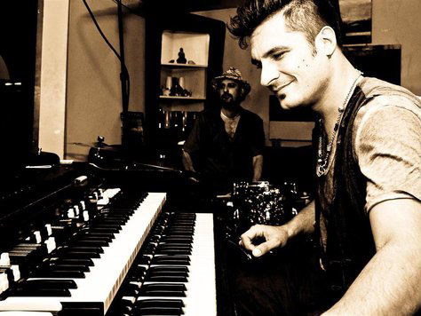
Друг Рафаэля, инженер по имени Сеппл из Австрии, который занимается иногда обслуживанием его органов, имел совершенно волшебный Hammond C-3 в великолепной кондиции. И по просьбе Рафаэля решился продать его нам по весьма сходной цене. Это - супер-везение. Круто еще и то, что Сеппл сам специалист по Хаммондам и перед отправкой хорошо поработал над органом: заменил все конденсаторы, отстроил магниты, заменил лампы и т.д. По просьбе Рафаэеля он даже собрал чудесный гибрид из лучшей колонки Лесли 122-й модели в корпусе от более старой Лесли 21H, в которой дерево лучше звучит на его изысканный вкус.
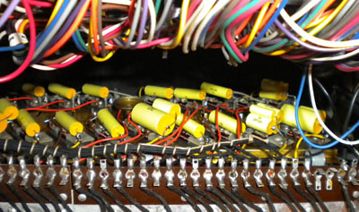
Так сложилось, что у меня случилась возможность привезти орган в Москву. Мой одноклассник и близкий родственник Андрей - резидент в Берлине, у него как раз оказался раздолбанный минивэн, из которого он только что вытащил все кресла сзади. Он согласился поучаствовать в авантюре (это его специальность), а я был уверен, что он сможет решить все проблемы, которые неизбежно возникнут. Всё организовали так, что в Австрию из Берлина и обратно ездил друг Андрея Коля, крутейший, между прочим, музыкант! Сеппл помогал, как мог, сделал чудесный орган, приготовил документы, принял Колю по высшему разряду. Короче говоря, все участники концессии перлись от всего мероприятия и делали все с большим удовольствием.
В середине обнаружилось, что я лично все-таки должен буду присоединиться к путешествию на самом ответственном этапе - импорте в Россию. Мы все подгадали и вечером в свой день рождения я улетел из Осло в Варшаву вместо Москвы, билет домой пришлось выкинуть. Там в аэропорту меня встретил Андрей с моим новым органом, прекрасно! ;))
Мы дорулили через Польшу, Литву и Латвию до российской границы, это была приятная поездка. На границе мы провели около 6 часов в процессе оформления документов. Наш орган вышиб из графика почти всю смену российских таможенников, которые никогда ничего подобного не видели. Нам пришлось вытащить почти без помощи вдвоем 270 килограммовую дуру (самая тяжелая часть 150кг), чтобы ее взвесить, обнюхать, сфотографировать и описать. Я лишился в процессе своих брюк, которые лопнули в самом интересном месте, потом еще хромал неделю. Для отчета таможенниками были подсчитаны все клавиши, педальки и переключатели, рулеткой измерены все размеры, включая скамейку, все общелкано со всех сторон.
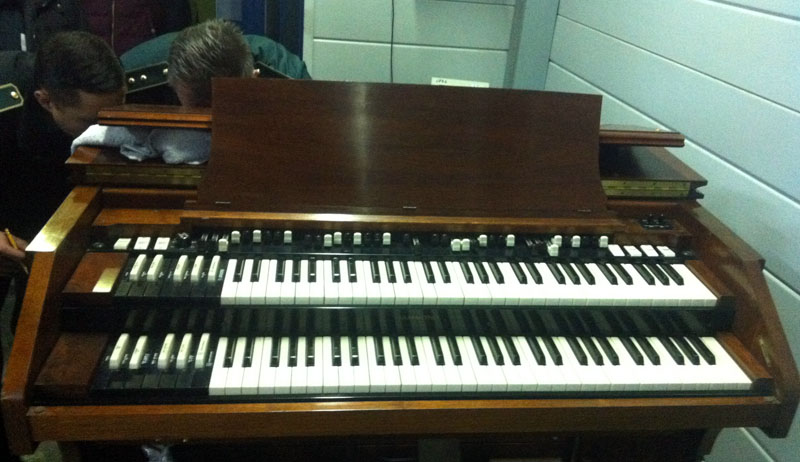
Ситуация была напряженная, могли завернуть в любой момент, но мы относились к происходящему с фатализмом, были готовы ко всему и поэтому немного расслабились. Проблемы могли возникнуть, например, из-за документов на машину. А могли заявить, что орган стоит в 10 раз больше. Настоящий кризис был в тот момент, когда они пытались понять, не может ли он являться культурной ценностью и пошли выяснять год производства. Из-за всего этого нас могли развернуть или отправить на склад. Пытаясь понять, что с нами делать, таможня узнала в интернете очень много про Хаммонды. Наконец, когда их все это тоже утомило, ибо было уже 6 утра, они решили нас выпустить, содрав пошлину и НДС. Все это мелочи жизни, а я хочу, пользуясь случаем, повторить еще раз спасибо инспекторам, которые потратили свое драгоценное время и поучаствовали в нашем отличном предприятии ;)
Мы поспали после границы в мотеле и рванули в Москву. Прибыли в Дом у Дороги вечером к окончанию концерта, там нас встречала делегация из 8 человек, включая вернувшихся Диму и Костю, которая собралась, чтобы посмотреть на чудо. Все были в нетерпении, поэтому Юрий Иваныч принял мудрейшее решение не откладывать на завтра, и к 2-м ночи мы установили и подключили орган. С нами после концерта оставался энтузиаст Коля Добкин, который дал нам возможность заценить инструмент на полную.
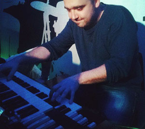
Мама, какой прекрасный у него звук! Если включить на нормальную громкость, ты его воспринимаешь не только ушами, но все твои внутренние органы резонируют и становятся частью инструмента!
И вот на этом наша поездка была, наконец, закончена, и от нее осталось лучшее вещественное воспоминание, которое только можно придумать. Орган можно слушать 2-3 раза в неделю на концертах в Доме у Дороги. И, если все будет хорошо, в апреле 2014 появится отличная возможность оценить его на полную на ураганном концерте Рафаэля Ресснига с гитаристом Энрико Кривелларо. Это будет супер-крутое гитарно-органное шоу, готовьтесь уже сейчас. До скорой встречи!!!
Федор Романенко, 16.11.2013
Blues.Ru -
Новости |
Музыканты |
Стили |
CD Обзор |
Концерты |
Live Band |
Форум